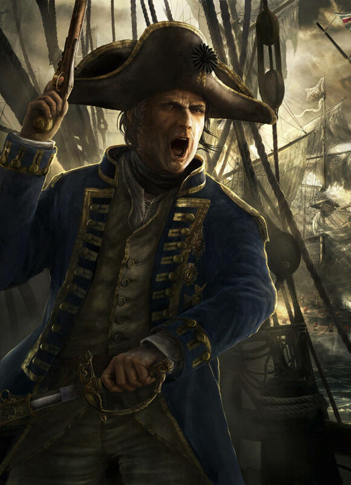

Язык, употребляемый на кораблях, этот изумительный язык моряков, живописный, достигающий совершенства, язык, на котором говорили Жан Бар, Дюкен, Сюффрен и Дюпере, язык, сливающийся со свистом ветра в снастях, с ревом рупора, со стуком абордажных топоров, с качкой, с ураганом, шквалом, залпами пушек, - это настоящее арго, героическое и блестящее, которое перед пугливым арго нищеты - то же, что лев перед шакалом.
В. Гюго «Отверженные»

Адмирал. Работа одного из основателей цифровой живописи и дизайна английского художника словацкого происхождения Радо Явора (Rado Javor)
Моряки Нормандского архипелага – подлинно древние галлы. Острова ныне быстро англизируются, но они долго блюли традиции, сложившиеся в старину. Серкский крестьянин говорит на языке времен Людовика XIV.
Лет сорок тому назад джерсейские и оринийские матросы изъяснялись на классическом морском диалекте. Можно было подумать, что находишься среди мореходов XVII века.
Знатоку-языковеду следовало бы приехать сюда, чтобы изучить старинное морское арго корабельной и боевой службы, которое некогда громыхало в рупоре Жана Бара, ужасавшем адмирала Хидда. Морской словарь наших предков, теперь почти совсем вытесненный новшествами, в двадцатых годах еще был в обиходе на Гернсее. Судно, хорошо идущее бейдевинд, звалось тогда «ладным булиньщиком»; «объякорить» означало «бросить якоря»; рыскливый корабль, почти сам собою поворачивающийся к ветру, назывался «ранк»; правый становой якорь – «плехт», а левый «дагликс». Когда надо было сказать: «Прошло судно», говорили: «Пробежал парус»; «усыпить конец снасти» означало закрепить конец бегучего такелажа; «запустить зуб» означало крепко стать на якорь; «траур» означало грязь, беспорядок на судне. Нынче так уже не скажут. Теперь говорят: «лавировать», а тогда говорили: «реить»; говорят: «обойти мыс» – говорили: «огрести мыс»; говорят: «галфвинд» – говорили: «поперечень»; говорят: «бак» – говорили: «форкастель»; говорят: «кубрик» – говорили: «орлоп»; говорят: «вахта» – говорили: «чередной караул»; говорят: «приводить к ветру» – говорили: «бетить»; говорят: «обстенить паруса» – говорили: «положить паруса обстенг». Турвиль писал Окенкуру: «Шли под парусами вкруть». «Топенант» тогда произносили: «тобенант», а «крамбол» – «крамбола»; вместо «зыбь» говорили: «толкун», а вместо «подводный камень» – «потайник». Анго умилился бы, доведись ему услышать в ту пору говор джерсейского лоцмана. Если повсюду паруса «полоскали», то на островах Ламанша они «закрывали»; если повсюду волны «пенились», то там они «жемчужились». На Нормандском архипелаге по старинке применялись только два способа крепления – плоский найтов и найтов с крыжом. Только там еще раздавались приказания на старинный лад: «Клади руль бакборт!», «Клади руль штирборт!» вместо: «Лево руля!», «Право руля!». Гранвильский матрос уже говорил: «кип блока», а матрос сентобенский или сенсансонский все продолжал твердить: «шкивный паз». То, что в Сен-Мало называлось «топтимберсом», в Сент-Элье было «ослиным ухом». Месс Летьери, под стать герцогу Вивонскому, вогнутую линию палубы звал «погибью», а молоток конопатчика – «кулаком». Именно на этом диалекте говорили Дюкен, разгромивший Рюитера, Дюге-Труэн, разгромивший Васнера, и Турвиль, который в 1681 году средь бела дня поставил на якорь первую галеру, обстрелявшую Алжир. Ныне язык этот мертв. Морское арго наших дней иное. Дюпере не понял бы Сюффрена.
Не меньше изменился и язык морских сигналов; далеко четырем фонарям – красному, белому, синему и желтому – времен Лабурдоне до нынешних восемнадцати сигнальных флагов, что, взвившись попарно, по три, по четыре, позволяют судам дальнего плавания обмениваться условными знаками в семидесяти тысячах сочетаний, никогда не подводят и, так сказать, предвидят непредвиденное!